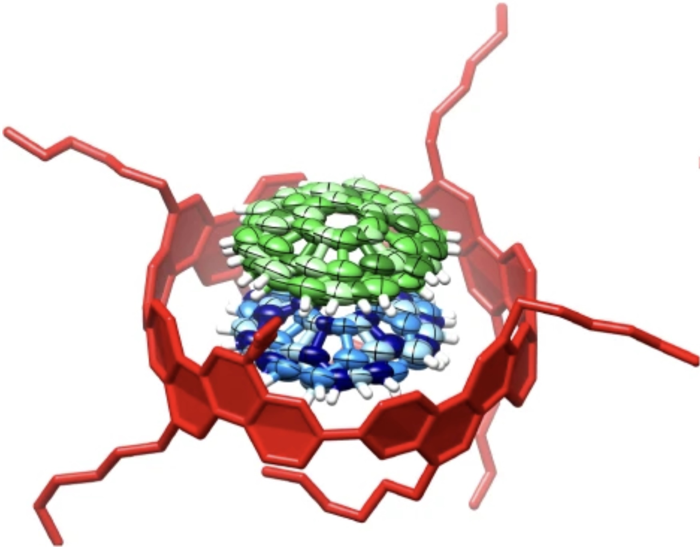
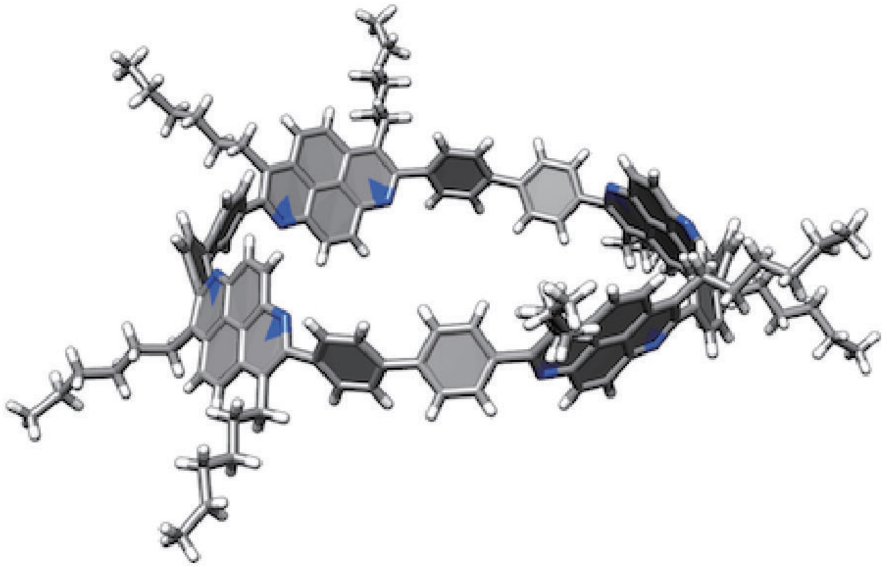

Concyclic CH–π arrays for single-axis rotations of a bowl in a tube
Nature Communications, vol. 9, Art. no. 3779, 2018
I'm a software and AI engineer with 7+ years of professional experience spanning software, AI, and robotics, and a member of the 2012 KOSEN Robocon national championship team.
At Brigham Young University's Security Operations IT division, I develop AI systems for physical security, including access-control anomaly detection. My previous work includes humanoid robot motion control.
My goal is to make low-cost humanoid robots useful in everyday life, reducing repetitive labor and the cost of essential services. I see physical security as a promising early application and my current work as a foundation for understanding real operational needs. I aim to pursue graduate research in reliable manipulation and safe human–robot collaboration.

National Champion
I designed, fabricated, and tested the ball-launching mechanism for our walking robot. Through repeated experiments and mechanical improvements, our team won Japan's national KOSEN robotics competition.
project page
Nature Communications, vol. 9, Art. no. 3779, 2018

Chemistry Letters, vol. 45, pp. 658–660, 2016